Kujukuri, Chiba: things to do, food and stays
Kujukuri · Chiba
Kujukuri
Highlighted on the Chiba map.
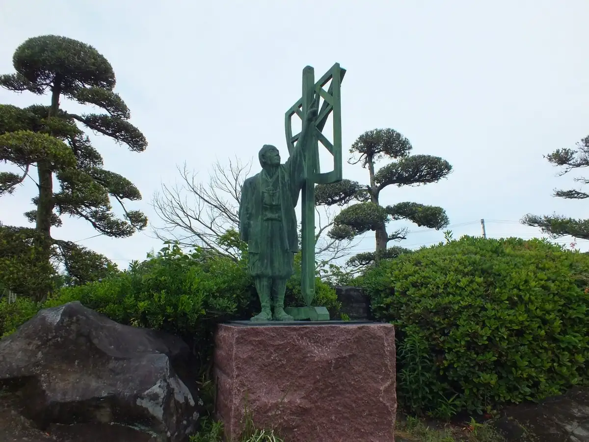
Stay
VILLA SENSE kujukuri
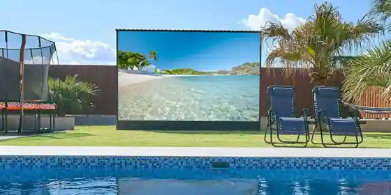
VILLA SENSE kujukuri
Inn in Katagai, Kujukuri with pet-friendly rooms and a sauna.
ドッグコテージ海の音
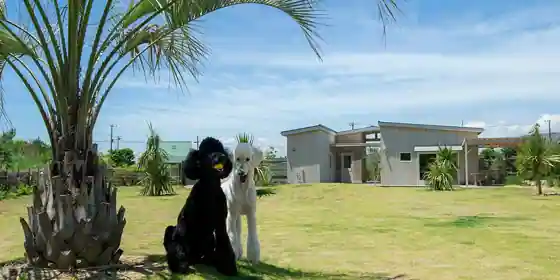
Doggu Cottage Umi No Oto
９１９ヴィラ ロングビーチ ドッグフレンドリー
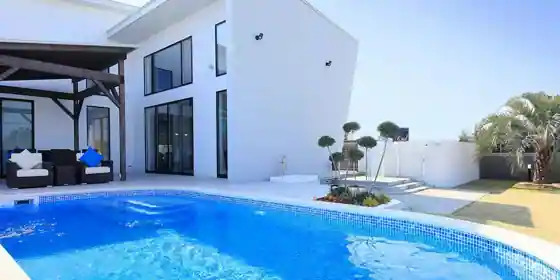
919 Villa Rongubichi Doggufurendori
VILLA Seamu
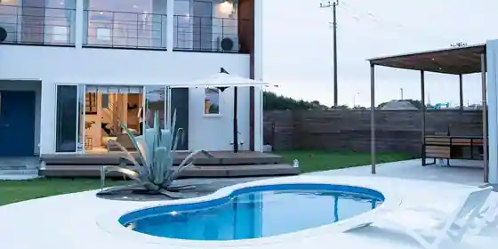
VILLA Seamu
RIVIERA Kujukuri
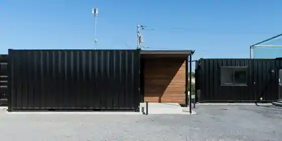
RIVIERA Kujukuri
THE Ocean’s Villa 九十九里
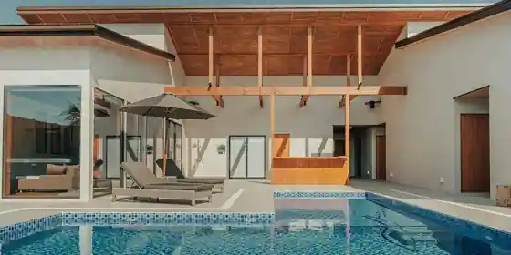
THE Ocean s Villa Kujukuri
THE CLUB 919 DOG FRIENDLY
THE CLUB 919 DOG FRIENDLY
九十九里 point59
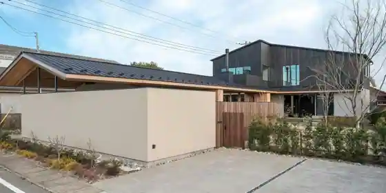
Kujukuri point59
Breath of the Sea Katakai
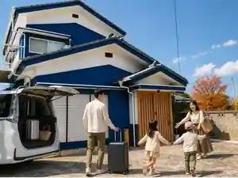
Breath of the Sea Katakai
Inn in Katagai, Kujukuri with parking.
ドッグコテージsurfside九十九里
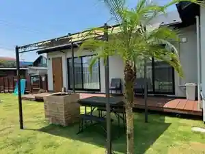
Doggu Cottage surfside Kujukuri
元気な宿 片貝
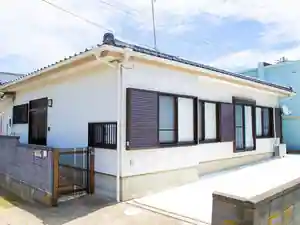
Genki Na Yado Katagai
Inn in Katagai, Kujukuri with local seafood dinners.
ＥＩＧＨＴ ＶＩＬＬＡＧＥ
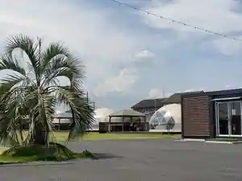
EIGHT VILLAGE
Inn in Katagai, Kujukuri with pet-friendly rooms.
Dining
いさりび食堂
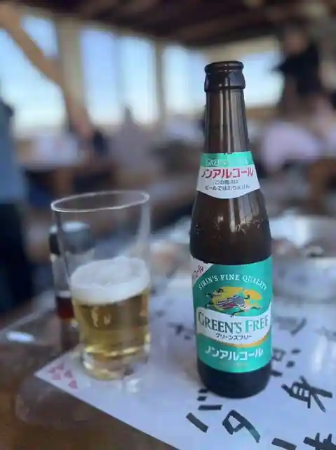
Isaribi Shokudo
ばんや
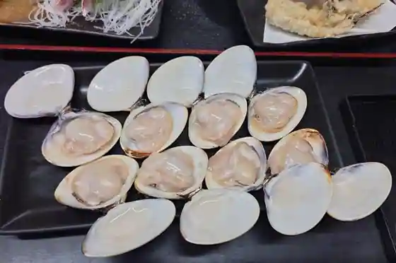
Banya
焼蛤 浜茶屋 向島
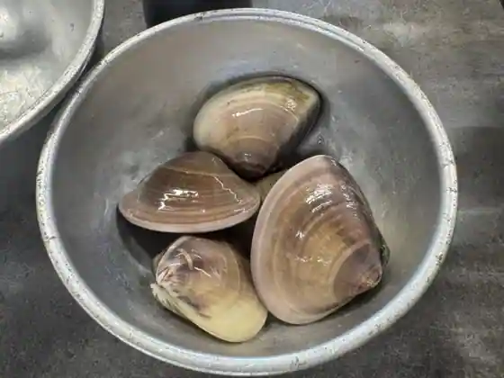
Yakihamaguri Hama Chaya Ko Shima
NAKAMICHI
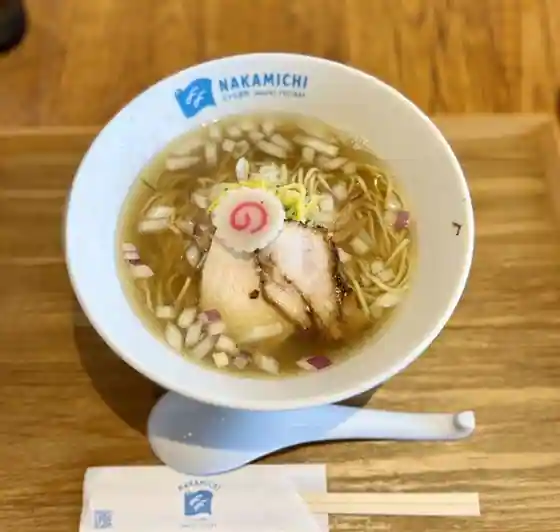
NAKAMICHI
Sghr cafe Kujukuri
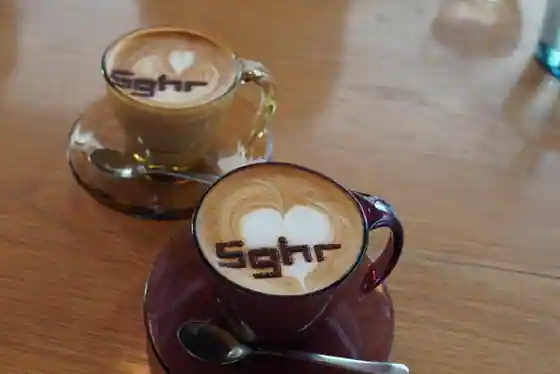
Sghr cafe Kujukuri
お食事処まるに
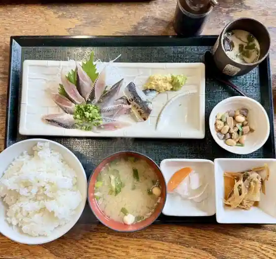
O Shokuji Tokoro Maruni
浜茶屋網元
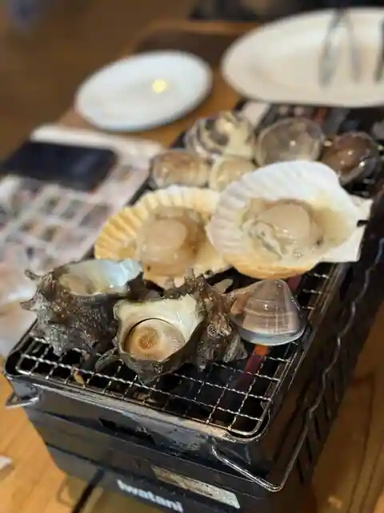
Hama Chaya Amimoto
ラ・パニエ
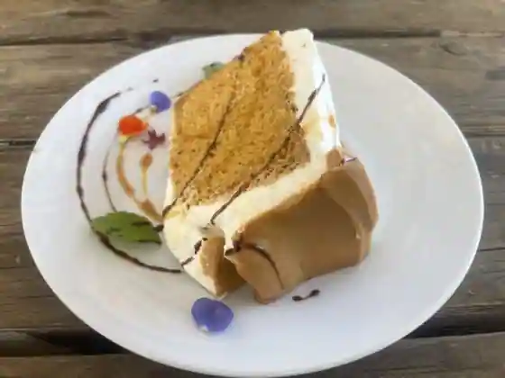
Ra Panie
えびせい
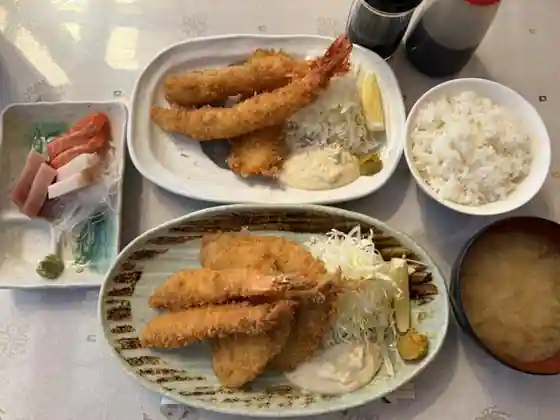
Ebisei
九十九里倉庫
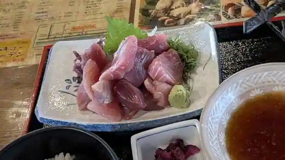
Kujukuri Soko
わたしの店
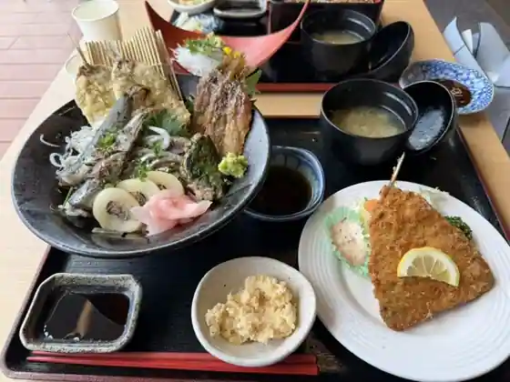
Watashino
浜料理 かずさ
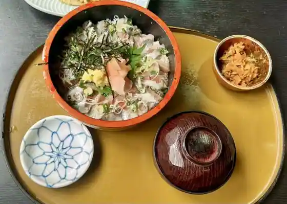
Hama Ryori Kazusa
大漁亭
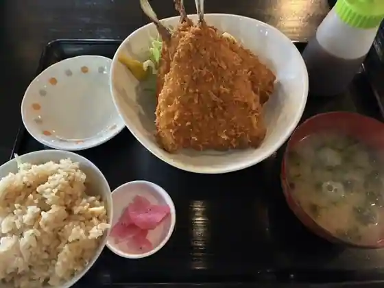
Tairyo Tei
望月
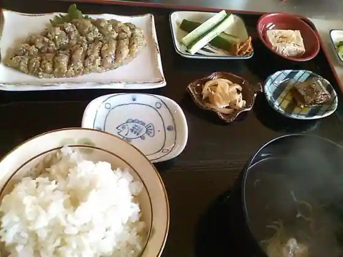
Mochizuki
海味の房 大輪
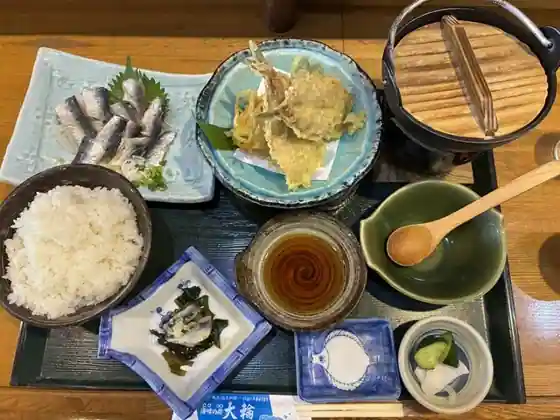
Umi Aji No Bo Tairin
大衆料理 とむら
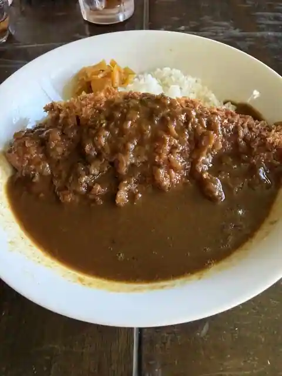
Taishu Ryori Tomura
レストラン ザ・マベリック
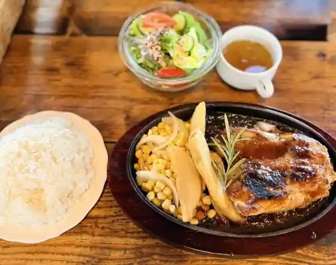
Restaurant Za Maberikku
味の広瀬や
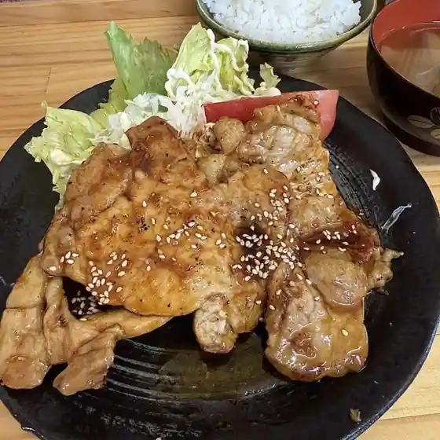
Aji No Hirose Ya
国民宿舎 サンライズ九十九里
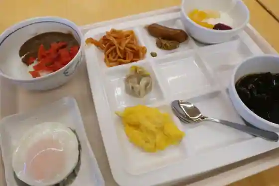
Kokuminshukusha Sanraizu Kujukuri
お食事処 やなぎや
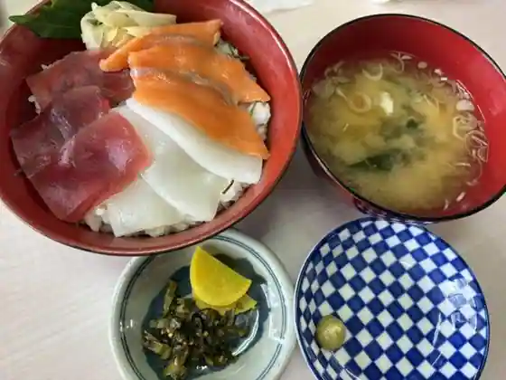
O Shokuji Tokoro Yanagiya
麦とろ 雪月庵
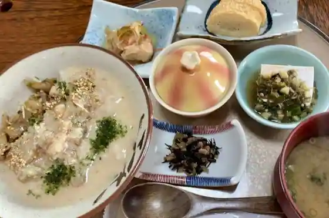
Mugi Toro Yuki Getsuan
VISSLA CAFE
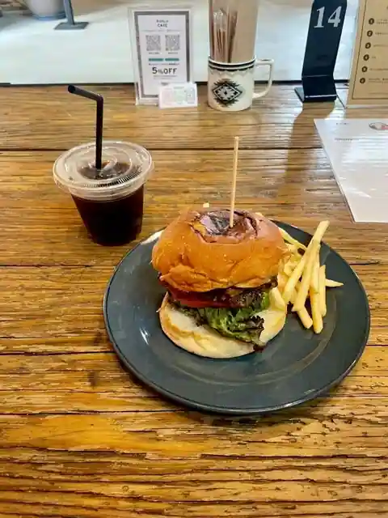
VISSLA CAFE
海の見えるレストラン はまゆう
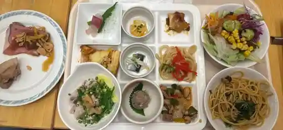
Umi No Mie Ru Restaurant Hamayu
黒潮
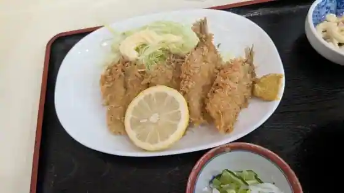
Kuroshio
Sights
Kujukuri Habu Garden
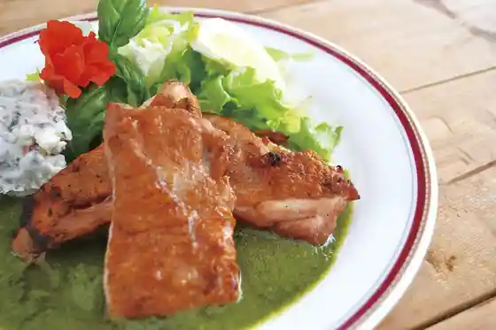
Katagai Chuo Coast (Katagai Beach)
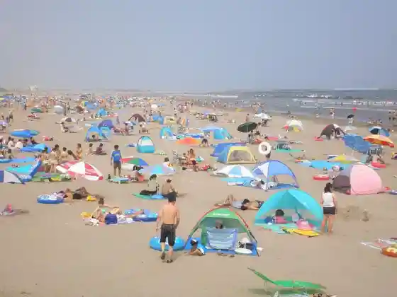
Sghr Sugawara Kogei Garasu
Ino Tadataka Memorial Park (Ino Tadataka Shusseichi)
Miyajima Ike Shinsui Park
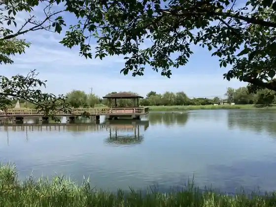